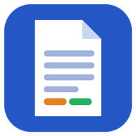

Gestor de papers
Aplicación web gratuita para investigadores y estudiantes
Gestor de papers sirve para organizar los artículos académicos (papers), libros, capítulos y sentencias que lees: guardar sus datos bibliográficos, tomar notas, clasificarlos por secciones y etiquetas, y exportar las citas en APA, MLA, Chicago, Harvard, Vancouver y otros estilos.
Qué puedes hacer
- Tu biblioteca de lecturas: autores, año, título, revista, DOI, páginas, valoración y estado de lectura de cada paper.
- Notas y citas textuales por paper, organizadas por secciones (por ejemplo, los capítulos de una tesis) y etiquetas.
- Importar referencias desde BibTeX, RIS, ScienceDirect, citas copiadas de Google Scholar o un DOI (consulta en CrossRef).
- Exportar la bibliografía en varios estilos de cita, también estilos propios y citas de jurisprudencia.
- Varios proyectos, cada uno con su archivo JSON, búsqueda avanzada, filtros, copias de seguridad y papelera.
- Funciona en el navegador y se puede instalar como aplicación (también sin conexión). Sin anuncios, sin registro y sin servidor propio.
Uso de Google Drive y de tus datos de Google
La sincronización con Google Drive es opcional: la aplicación funciona igual sin ella, guardando los datos en tu navegador y en los archivos JSON que tú eliges. Si la activas con «Conectar con Google Drive», la aplicación:
- Pide un único permiso:
https://www.googleapis.com/auth/drive.appdata, que solo da acceso a una carpeta privada y oculta de tu propio Google Drive reservada para esta aplicación. No puede ver, leer ni modificar ningún otro archivo de tu Drive. - Usa esa carpeta solo para guardar y sincronizar entre tus dispositivos tus proyectos (papers, notas, ajustes, imágenes incrustadas y, si lo activas, los PDF que enlaces).
- Lee el correo de tu cuenta solo para mostrarte con qué cuenta has iniciado sesión.
- Se conecta directamente desde tu navegador a Google: los datos no pasan por ningún servidor de quien mantiene la aplicación, que no tiene acceso a ellos. No se venden, no se comparten con terceros, no se usan para publicidad ni para entrenar modelos de inteligencia artificial.
- Puedes cerrar sesión, borrar la copia de Drive desde la propia aplicación o retirar el permiso en myaccount.google.com/permissions.
El uso y la transferencia a cualquier otra aplicación de la información recibida de las API de Google se ajustan a la Política de datos de usuario de los servicios de API de Google, incluidos los requisitos de uso limitado. Detalles en la política de privacidad.
Quién la mantiene
Gestor de papers es un proyecto personal de código abierto mantenido por RMalumP (código en GitHub). Contacto: r.malumbresp@gmail.com.
Gestor de papers (Paper manager) — English
Gestor de papers is a free web app that helps researchers and students organise the academic papers, books, chapters and court decisions they read: store bibliographic data, take notes and quotes, classify items into sections and tags, and export citations in APA, MLA, Chicago, Harvard, Vancouver and other styles.
Features
- Reading library with authors, year, title, journal, DOI, pages, rating and reading status.
- Notes and quotes per paper, organised by sections and tags.
- Import references from BibTeX, RIS, ScienceDirect, Google Scholar citations or a DOI (CrossRef lookup).
- Export bibliographies in several citation styles, including custom styles.
- Several projects, advanced search, filters, backups and trash. Installable as an app (works offline). No ads, no sign-up, no backend server.
How the app uses Google user data
Google Drive sync is optional; the app works fully without it. When the user clicks “Connect to Google Drive”, the app:
- Requests a single scope,
https://www.googleapis.com/auth/drive.appdata, which only grants access to a private, hidden application data folder in the user’s own Google Drive. The app cannot see, read or modify any other file in the user’s Drive. - Uses that folder only to store the user’s own library and sync it across the user’s devices (papers, notes, settings, embedded images and, if enabled, linked PDFs).
- Reads the account e-mail address only to show the user which account is signed in.
- Talks directly from the browser to Google. No data goes through any server run by the developer, who has no access to it. Data is never sold, shared with third parties, used for advertising, or used to train AI/ML models.
- Users can sign out, delete the Drive copy from inside the app, or revoke access at myaccount.google.com/permissions.
Gestor de papers’ use and transfer to any other app of information received from Google APIs will adhere to the Google API Services User Data Policy, including the Limited Use requirements. See the privacy policy.
Developer
Gestor de papers is an open-source personal project maintained by RMalumP (source code on GitHub). Contact: r.malumbresp@gmail.com.